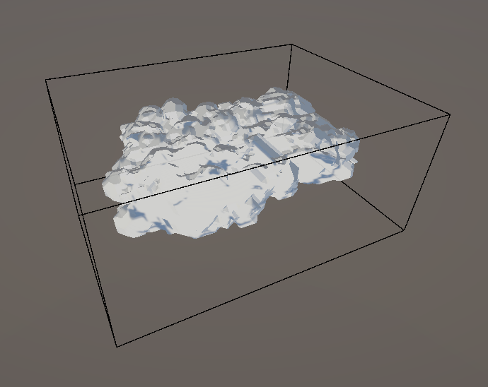

It has begun.
February 8, 2025
Core concept discussion. Arrived at a consensus for what the project would be, and more importantly, what us programmers need to do.
Read MoreInto the Pits. 1/4
February 8, 2025
Building the procedurally generated caves.
This is going to be a challenge.
To build a cave, which is essentially a cavity, I wanted to explore creating an algorithm from
scratch.
Through some thought cycles, I settled on a custom solution, a method where volumes
are layered additively in stages to form a complex outer hull that defines the cave structure.
I'm calling this method CAVE CASCADES.
PSEUDO CODE FOR THE CAVE CASCADES
1. Define a base cascade volume.
2. For every cascade stage iterated through with a depth value, append volumes along the surface of the previous cascade stage.
3. Randomize between cuboidal and spherical voolumes in each stage.
4. Encapsulate all the generated volumes to form a container.
One of the intriguing techniques I've incorporated is the use of bit manipulation to select the surface face around which the next cascade stage will be generated. This method ensures a high level of precision in the algorithm.
int randomPower = (int)Helper.Randomize(ref seed, ref output, 0f, 3f);
int baseResult = (int)Mathf.Pow(2, randomPower);
int requiredResult = 7 - baseResult;
The random power generates a number between 0 and 2(inclusive). Raising 2 to this random power gives
1, 2, or 4.
The binary representations of these numbers(shortened to 3 bits) are:
1 : 001
2 : 010
4 : 100
This step isolates an axis, as seen with 0 and 1, to position a cascade volume.
Subtracting these values from 7 results in outputs 3, 5, and 6, whose binary representations
are:
3 : 011
5 : 101
6 : 110
These subtracted values essentially remove the influence of the missing bit, confining the cascade
volume to its plane.
Randomizing the two dimensions of the coordinates on the plane gives a position to generate a
cascade.


The developing complexity of each cascade depth builds into the cave's volume.
The resulting cave structure had good detail and organic looking structure but was very angular
without any smooth or curved areas, as caves usually feature.
Introducing spheres with each cascade depth to build the volume proved to be the perfect addition to
fleshing out the volume.

With the volume/cavity of the cave generated, the points lying within in a fixed spatial density containing information about the volumes had to be derived. The points generated in the compute shader contain the volume-bound information into Vector4 data structured buffers. The system uses thread IDs to calculate the appropriate indices, allowing the system to generate points in a volume at a higher density than customarily computed. The points in the coordinate system are generated and are closer to each other, allowing for higher fidelity of the generated mesh in the following steps.
// id is uint3 SV_DispatchThreadID, the global thread index in a compute shader defined by the [numthreads()] property.
// _position is the world space position of the cave parent object.
// _bounds is the calculated bounding volume generated encompassing the cascades.
// Converting SV_DispatchThreadID into World Space Positions.
float3 position = (id) / 3.0 + _position - _bounds * 0.5;
// Converting Position based data into global indices for mesh generation stage.
int _index = id.x + id.y * 3 * _bounds.x + id.z * 3 * 3 * _bounds.y * _bounds.x;
The points generated by the compute shader, filtered out to only display those within the generated cave volume.
The mesh generation is taken care of by the MARCHING CUBES algorithm.
This algorithm uses the relative relationship between the 8 vertices of a cube to decide how the intermediate surface should be.
Based on the value of the whether the points are part of solid geometry or not. There are 256 permutations of how each vertex of a cube can be and how it's resulting surface would look like.
This can further be optimized to 15 cases, as the cube is symmetric and the surface can be mirrored across the axes. The algorithm uses a lookup table to determine how the surface should be generated based on the values of the vertices.
The previous points generation stage is crucial for optimal mesh generation by the Marching Cubes algorithm.
The density of the cells used by the Marching Cubes algorithm determines the quality and resolution of the generated mesh.
Wireframe of the generated caves.


Caves when viewed from the inside and their wireframe representation.


Some examples of the caves generated using this method.

Into the Pits. 2/4
February 19, 2025
Manipulating the Cave Volume and Shape.
Read More
Procedurally generated seeded caves are a go! They have a moderate amout of detail and are within a
reasonable tri-count.
Having seeded caves is very beneficial for the game, as it allows for a lot of flexibility in the design of the caves and the gameplay.
However, any detail that needs to be intentional cannot be baked into the seed and/or the algorithm itself.
This is where the next step comes in, where the cave volume can be manipulated to add detail and features to the cave.
The cave volume can be manipulated in a few ways, such as:
1. Defining a volume called "Cavities" that will remove parts of the cave that are within it.
2. Defining a colume called "Cambers" that will add it's volume to the cave.
Cavities
Using bounds to define the position and extends of the volume to be removed from the cave.


With the cavities in place, the cave can be manipulated to have very specific features to accomodate for visual or gameplay related purposes.
Cambers
Similar to the cavities, bounds define the position and extends of the volume to be added into the cave.

Combinations for better detail.
The cavities and cambers can be combined to create more complex shapes and features in the cave.
Like this tavern bar area built right into the cave structure.
With this, the designers have full control of parts of the cave that needs a fixed appearance.
The designers can define the position and extends of the cavities and cambers to create a very specific look for the cave.
This allows for a lot of flexibility in the design of the caves and the gameplay.